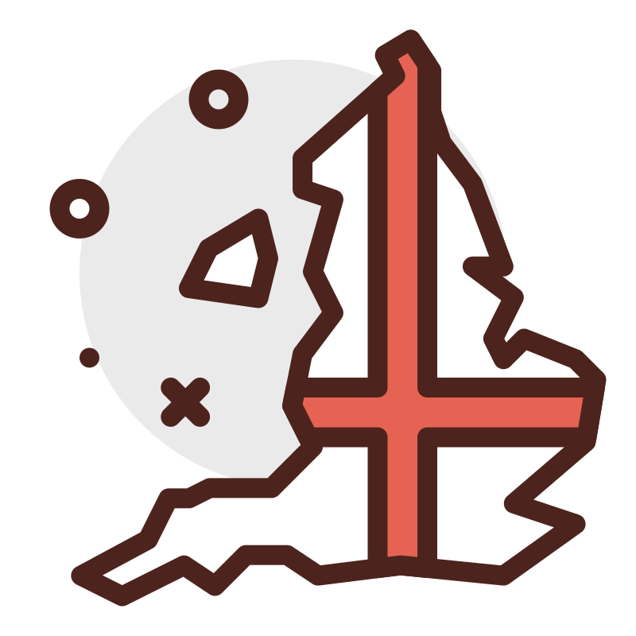
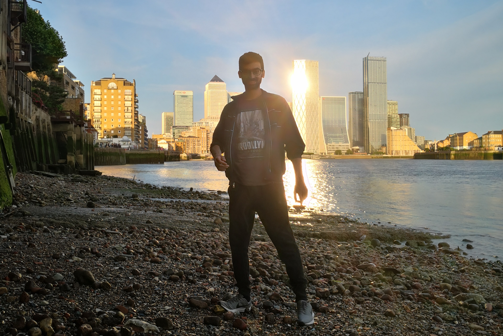

✨LAVORI✨
BAGNINO di SALVATAGGIO
Durante il mio soggiorno in Italia e in Spagna ho avuto modo di usufruire del mio brevetto, ricoprendo il ruolo di bagnino in mare aperto.
La mia esperienza lavorativa più arricchente è stata nelle isole Baleari, dove ho avuto l'opportunità di lavorare per 'Marsave SRL', assistendo
clienti da tutto il mondo. È stato un ottimo posto per crescere e sviluppare Competenze Linguistiche (vai sotto).
da Lavori Poco-qualificati ad ADMIN 💼
Parallelamente agli studi sono riuscito a portare avanti alcuni lavori temporanei che si adattavano ai miei impegni. È stato difficile e io
sono fiero di dire che sono partito da ruoli umili. Berry Recruitment mi ha aiutato con tutto ciò di cui avevo bisogno e
alla fine mi ha proposto di fare un passo avanti come amministratore. Nel frattempo ero ancora nel bel mezzo dei miei studi alla London Middlesex University.
È stato un percorso di grandi successi per me!
GUARDIA di SICUREZZA
Una volta ottenuto il badge SIA, ero pronto per ricoprire piccoli ruoli in varie sedi di alto profilo. Non è stato facile a causa
del prosieguo dei miei studi, ma posso dirti che è stato possibile e che il duro lavoro soddisfa di più!! Di seguito alcuni ricordi
di quel periodo (↓↓↓).
Checking for further updates...
✨SET DI COMPETENZE✨
COMPETENZE LINGUISTICHE
-
 INGLESE: Prima di iscrivermi all'università avevo già ottenuto una certificazione IELTS academic di 7,5 punti,
che corrisponde a un C1 e include la scrittura accademica. Da lì in poi ho potuto solo migliorare la lingua
e ho dovuto mettermi alla prova anche in circostanze impegnative. Complimenti a me !!

Per adesso preferisco praticare l'inglese attraverso la lettura, l'ascolto e la scrittura, dato che attualmente non vivo nel Regno Unito.
Quando ne ho l'occasione sono felice di avere una conversazione in inglese parlato. Certe cose non cambiano!
-
 SPAGNOLO: Il mio spagnolo è fluente e pronto all'uso, tuttavia prefereisco parlare o pensare in inglese piuttosto che in spagnolo.
SPAGNOLO: Il mio spagnolo è fluente e pronto all'uso, tuttavia prefereisco parlare o pensare in inglese piuttosto che in spagnolo.
COMPETENZE PC 💻
Ho usato prevalentemente Excel, Word, e Canvas/PowerPoinit in presentazioni e relazioni di lavoro e accademiche. Dopodiché, ho
sviluppato un'esperienza di anni nella programmazione: mi piacciono sia sviluppo web che linguaggi vicini a OS/processore (es. linguaggio C, assembly x86
e Motorola 68000). Ho imparato tutte queste lingue nella mia attuale università in Italia, dove studio Ingegneria Informatica.
In alcuni di questi e in altri esami mi sono distinto con il voto più alto.
Preferisco la programmazione piuttosto che usare il PC come un utente finale che non è a conoscenza della magia dietro queste macchine.
Ora il mio interesse principale è lo sviluppo web.
DINAMISMO
Sono una persona qualificata che intende abbinare le competenze linguistiche con l'informatica. Mi rivedo nell'iniziare come
sviluppatore web per acquisire nuove esperienze e alla fine migliorare la mia carriera come solito. Ho buone competenze comunicative,
e sono molto dinamico. Posso essere favoloso nel lavoro di squadra, sia ricevendo che impartendo direzioni; le sfide non mi spaventano!
Inoltre, il fatto di conoscere l'inglese mi da un bel vantaggio, in relazione a documentazioni ufficiali, programmazione e uso di IA.
Non sono il primissimo fan dell'IA, ma capisco benissimo l'importanza di strumenti come Microsoft Copilot e ChatGPT.